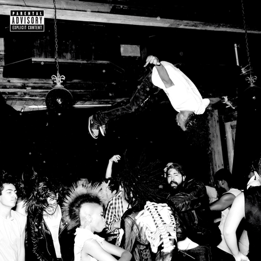
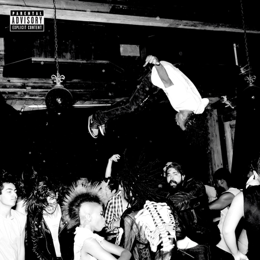

Albuns
Playboi carti
Die lit

Whole Lotta Red
Playboi Carti é um rapper, cantor e compositor americano. Seu nome verdadeiro é Jordan Terrell Carter, nascido em 13 de setembro de 1996 em Atlanta, Geórgia, EUA. Ele ganhou popularidade na cena hip-hop no final da década de 2010, com seu estilo único e voz distintiva...
Saiba maisPlayboi carti
Die lit
Whole Lotta Red